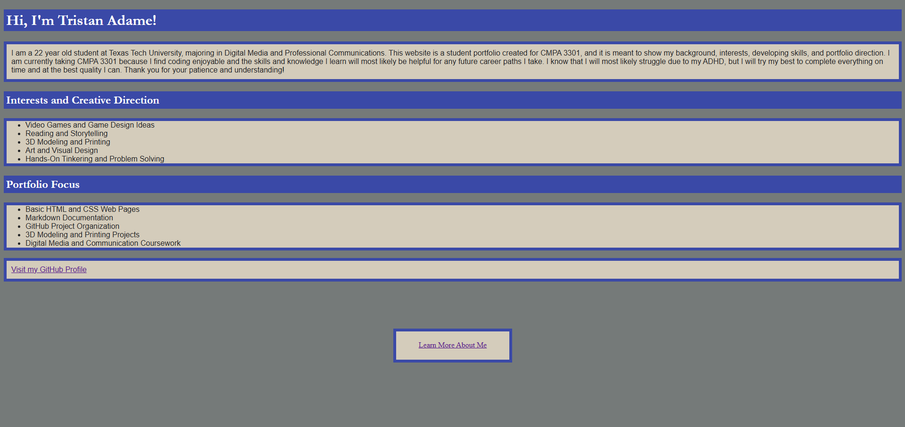
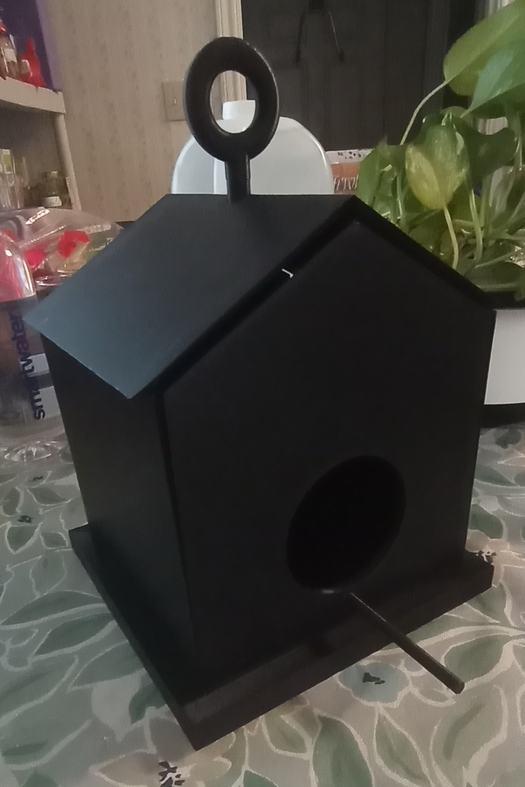
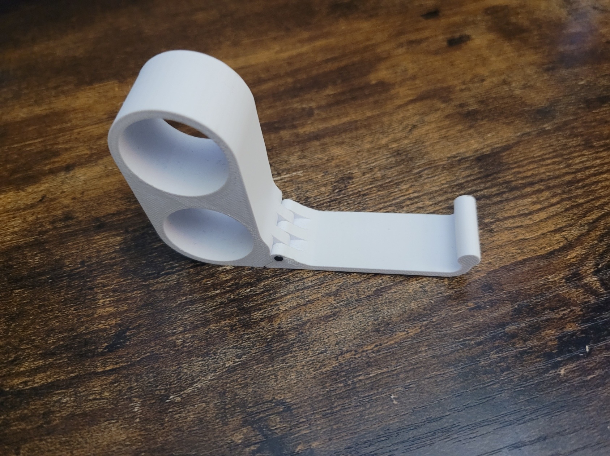

Web Design
I am learning how to build webpages with HTML and CSS, while also thinking about layout, spacing, color, and how the page feels to use.
I am a Digital Media and Professional Communications student at Texas Tech University. I am interested in web design, digital media, 3D modeling, 3D printing, and creative problem solving. This page is a starting point for my personal portfolio, and I plan to keep building it as I gain more experience and finish more projects.
View My ProjectsMy name is Tristan Adame, and I am currently studying Digital Media and Professional Communications at Texas Tech University. I am still figuring out the exact direction I want to go professionally, but I know I am interested in work that combines creativity, technology, and communication.
Some of my interests include web design, digital art, 3D modeling, 3D printing, video games, and hands-on problem solving. I like projects where I can build something, adjust it, test it, and keep improving it over time. This landing page is not meant to make me look like a finished professional yet. It is more of a foundation that I can continue developing as my skills grow.
I am learning how to build webpages with HTML and CSS, while also thinking about layout, spacing, color, and how the page feels to use.
I am interested in digital design, online communication, and using creative tools to organize ideas in a way that people can understand.
I enjoy 3D modeling, 3D printing, and hands-on projects because they involve planning, problem solving, and fixing mistakes as I go.
This section gives me a place to organize work I have already made and work I want to keep building in the future. These projects connect to my interests in web design, digital media, 3D modeling, and hands-on creative work.

A personal website I created for a previous class. This project gave me experience building a live webpage and helped me start thinking about how I want to present myself online.
Visit Website
A 3D modeling and printing project where I made a birdhouse because my parents wanted one. This project connects to my interest in building physical objects, thinking through structure, and making something useful beyond just the screen.

A 3D modeling and printing project where I made a folding phone stand because my parents wanted one. It is also useful for me, and the project fits my interest in practical design because it involves movement, spacing, and how an object actually works.